Linux高性能服务器编程 第1章 TCP/IP协议族
文章目录
- 现在Internet使用的主流协议族是
TCP/IP，它是分层、多协议的通信体系 - TCP/IP协议族包含众多协议，系统学习需查
RFC(Request For Comments)文档
TCP/IP协议族体系结构以及主要协议
- TCP/IP协议族是
四层协议系统，自底向上是数据链路层、网络层、传输层、应用层，上层协议使用下层协议提供的服务，如图1.1 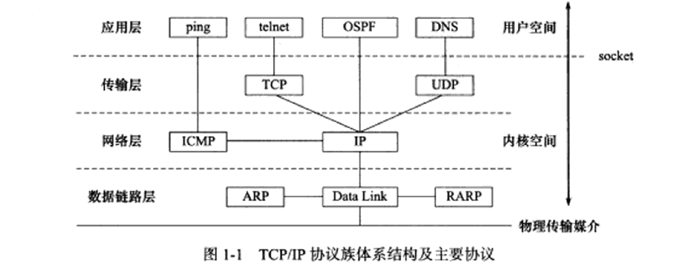
数据链路层
- 数据链路层实现网卡接口和网络驱动，以处理数据在物理媒介（以太网、令牌环等）上的传输
- 网络驱动隐藏了不同物理网络的电气特性等细节，对上层协议提供统一的接口
- 数据链路层常用的两个协议：
ARP(Address Resolve Protocol，地址解析)和RARP(Reverse ARP，逆地址解析)，它们实现IP地址和物理地址（通常是MAC地址，以太网、令牌环、802.11无线都使用MAC地址）之间的转换ARP协议：网络层使用IP地址寻址一台机器，数据链路层使用物理地址寻址一台机器，因此网络层必须先用ARP协议将目标机器的IP地址转换为物理地址RARP协议：仅用于网络上的某些无盘工作站，它们缺乏存储设备，无法记住自己的IP地址。运行RARP的网管通常存有该网络上所有机器的物理地址到IP地址的映射
网络层
- 网络层实现数据包的选路和转发。
WAN(Wide Area Network，广域网)通常使用众多分级的路由来连接分散的主机或LAN(Local Area Network，局域网) - 通信的主机之间一般不直接连接，而是通过多个中间节点（路由）连接的，网络层的任务是选择这些节点，确定两台主机间的通信路径
- 网络层对上层协议隐藏了网络拓扑连接的细节。在上层协议看来，通信的两台主机是直接连接的
- 网络层最核心的协议是
IP(Internet Protocol，因特网协议)协议，它根据数据包的目的IP地址来决定如何投递：若数据包不能直接发送给目标主机，就为它寻找合适的下一跳路由，并将数据包交给该路由转发。多次重复该过程直到最终到达目的主机，或因发送失败被丢弃。 - IP协议使用
逐跳(hop by hop)的方式确定通信路径 - 网络层另一个重要的协议是
ICMP(Internet Control Message Protocol，因特网控制报文协议)协议，它是IP协议的补充，主要用于检测网络连接。 - ICMP协议使用的报文格式如图1.2 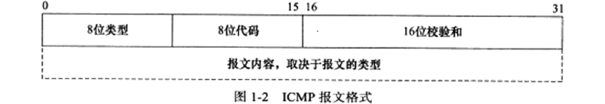
- 上图中各字段的用途：
8位类型字段用于区分报文类型，它将ICMP报文分为两大类：差错报文：主要用于回应网络错误，例如目标不可达（类型值为3）和重定向（类型值为5）查询报文：用于查询网络信息，例如ping程序使用ICMP报文查看目标是否可到达（类型值为8）
- 有的ICMP还使用
8位代码字段来进一步细分不同的条件，例如重定向报文使用代码值0表示对网络重定向，代码值1表示对主机重定向 16位校验和字段对整个报文（包括头部和内容）进行CRC(Cyclic Redundancy Check，循环冗余校验)来检验报文在传输过程中是否被损坏
- 不同的ICMP报文类型具有不同的正文内容，具体参考RFC792
- ICMP协议并非严格意义上的网络层协议，因为它使用同一层的IP协议提供的服务（算是IP的上层协议）
传输层
- 传输层为两台主机上的程序提供
端到端(end to end)的通信，只关心起始端和目的端，不关心中转过程（和网络层的逐跳方式相反） - 传输层和网络层的区别见图1.3 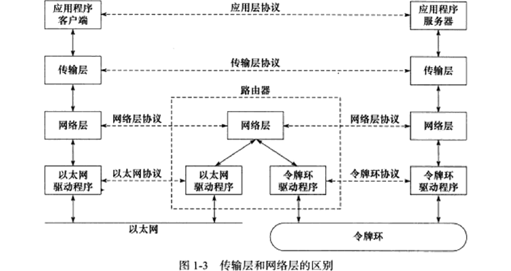
- 上图中垂直实线是TCP/IP各层协议之间的实体通信，水平虚线是逻辑通路
- 数据链路层封装了物理网络的电气细节
- 网络层封装了网络连接的细节
- 传输层封装了一条端到端的逻辑通信链路，它负责数据的收发、链路的超时重连等
- 传输层的主要协议有：
TCP、UDP、SCTPTCP(Transmission Control Protocol，传输控制协议)：为应用层提供可靠的、面向连接的、基于流的服务：可靠：TCP使用超时重传、数据确认等方式确保数据包正确地发送到目的端面向连接：使用TCP通信的双方必须先建立连接并在内核中为连接维护一些数据结构，如连接状态、读写缓冲区、定时器等。通信结束时，双方必须关闭连接以释放这些数据基于流：TCP的数据没有长度限制，发送端可逐个字节地写入，接收端可逐个字节地读取
UDP(User Datagram Protocol，用户数据报协议)：为应用层提供不可靠、无连接、基于数据报的服务：不可靠：无法保证数据从发送端正确传送到目的端，丢失或错误时UDP仅告知程序发送失败，使用UDP的程序需自己处理数据确认、超时重传等无连接：通信双方不必保持长久的联系，每次发送都需明确指定接收端地址基于数据报：每个UDP数据报都有长度，接收端必须以该长度为最小单位将数据报的内容一次性读出，否则数据被截断
SCTP(Stream Control Transmission Protocol，流控制传输协议)：为在因特网上传输电话信号而设计，可参考RFC2960
应用层
- 应用层协议工作在用户态：
- 数据链路层、网络层、传输层处理网络通信细节，在
内核空间中实现 - 应用层处理众多逻辑，如文件传输、名称查询、网络管理等，通常在
用户空间中实现（也有少数服务器程序在内核中实现，为减少数据复制和状态切换的开销，但这样不够灵活且不便移植）
- 数据链路层、网络层、传输层处理网络通信细节，在
- 应用层协议举例（见图1.1）：
ping是应用程序而非协议，利用ICMP报文检测网络连接telnet协议是远程登陆协议，可在本地完成远程任务OSPF(Open Shortest Path First，开放最短路径优先)协议是动态路由更新协议，用于路由器之间通信DNS(Domain Name Service，域名服务)协议提供机器域名到IP地址的转换
- 应用层协议/程序可跳过传输层直接使用网络层的服务（如ping和OSPF），既可使用TCP又可使用UDP（如DNS）
- 可通过
/etc/services文件查看所有知名的应用层协议，以及它们使用哪些传输层服务
封装
- 上层协议通过
封装使用下层协议的服务：程序数据在发送之前沿着协议栈从上往下传递，每层协议都在上层数据的基础上添加自己的头部（有时还有尾部），如图1.4 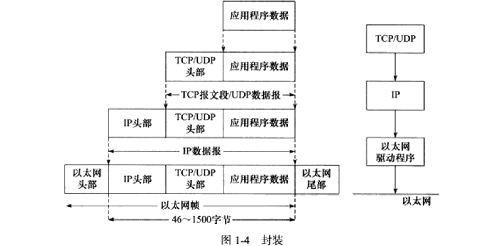 - 经过TCP封装后的数据称为
TCP报文段，由TCP头部信息和TCP内核缓冲区的数据构成，如图1.5，发送端程序使用send/write函数向一个已建立的TCP连接写入数据时，内核的TCP模块首先把数据复制到该连接对应的TCP内核发送缓冲区中，然后TCP模块调用IP模块提供的服务，向IP模块传递的参数包括TCP头部信息和TCP发送缓冲区的数据，即TCP报文段 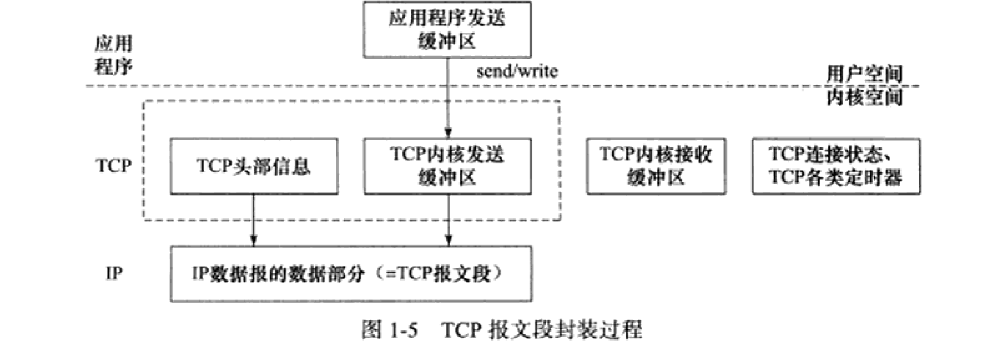 - 经过UDP封装的数据称为
UDP数据报，UDP不需要为应用层数据保持副本，因为不可靠。一个UDP数据报被发送后，UDP内核缓冲区的该数据报就被丢弃。若需要重发则需重新从用户空间中拷贝 - 经过IP封装后的数据称为
IP数据报，它也包括头部信息和数据部分，其中数据部分是一个TCP报文段/UDP数据报/ICMP报文 - 经过数据链路层封装的数据称为
帧，帧是最终在物理网络上传送的字节序列，其类型取决于传输媒介。以太网帧的封装格式如图1.6- 6字节的
目的物理地址和6字节的源物理地址来表示通信双方 - 2字节
类型字段表示上一层协议类型 - 4字节
CRC字段对帧的其他部分提供差错检验 - 帧的
MTU(Max Transmit Unit，最大传输单元)通常受网络类型限制，以太网帧的MTU是1500字节，过长的IP数据报会被分片(fragment)传输 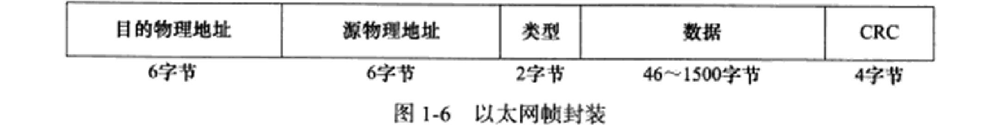
- 6字节的
分用
分用：帧到达目的主机时将沿协议栈自底向上传递，各层协议依次处理本层负责的头部数据，最终将处理后的帧交给目标程序。- 分用是依靠头部信息中的
类型字段实现的，RFC1700定义了所有标识上层协议的类型字段和各上层协议对应的值。 - 以太网帧的分用过程如图1.7 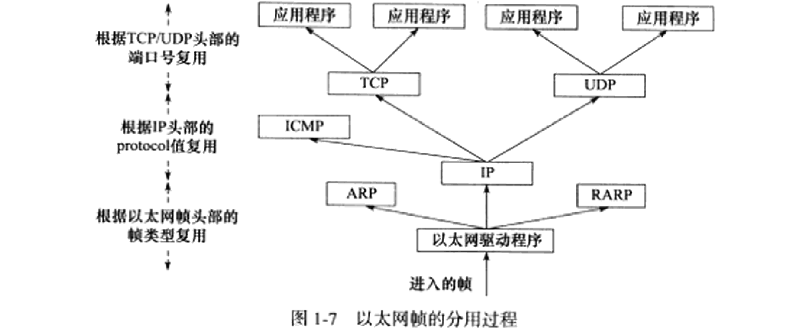
- IP、ARP、RARP都使用帧传输数据，故帧的头部需要提供字段区分它们。以太网帧使用2字节
类型字段标识上层协议：- 类型字段0x800表示IP数据报
- 类型字段0x806表示ARP请求/应答报文
- 类型字段0x835表示RARP请求/应答报文
- TCP、UDP、ICMP都使用IP协议，故IP数据报头部使用16位
协议字段区分它们 - TCP报文段和UDP数据报通过头部中的16位
端口号字段区分上层应用程序，例如DNS使用53端口，HTTP协议使用80端口。所有知名应用层协议使用的端口号都可在/etc/services中查询 - 帧通过分用步骤将封装前的原始数据送至目标服务，在顶层应用看来，封装和分用似乎没有发生过
测试网络
- 本书若未特别声明，所有测试硬件都是如图1.8的网络：两台主机通过路由器接入网络 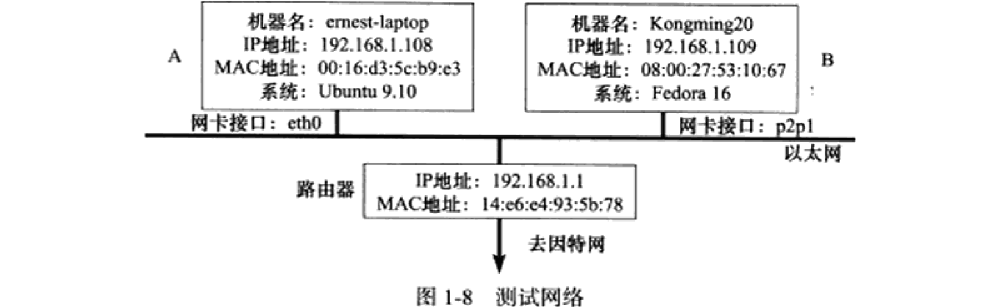
- 我自己的测试平台如下：
| A机 | B机 | 路由器 | |
|---|---|---|---|
| 机器名 | ernest-laptop | Kongming20 | - |
| IP地址 | 192.168.1.108 | 192.168.1.109 | 192.168.1.1 |
| MAC地址 | 00:16:d3:5c:b9:c3 | 08:00:27:53:10:67 | 14:e6:e4:93:5b:78 |
| 系统 | ubuntu 18（实体机） | ubuntu 18（虚拟机） | - |
| 网卡 | eth0 | ens33 | - |
ARP协议工作原理
- ARP协议可实现任意网络层地址到任意物理地址的转换
- ARP协议实现IP地址向物理地址转换的
原理是：主机向所在的网络广播一个ARP请求，请求目标机器的网络地址。该网络上所有主机都收到该请求，但只有被请求的目标机器会回应，回应内容包含自己的物理地址
以太网ARP请求/应答报文详解
- 以太网ARP请求/应答报文的格式如图1.9： 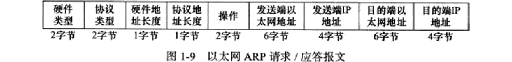
- 上图中各字段：
硬件类型字段定义物理地址的类型，为1表示MAC地址协议类型字段表示要映射的协议地址类型，为0x800表示IP地址硬件地址长度字段和协议地址长度字段，单位是字节，MAC地址的长度为6，IPv4地址的长度为4操作字段指出4种操作类型：为1表示ARP请求，为2表示ARP应答，为3表示RARP请求，为4表示RARP应答- 最后4个字段指定通信双方的以太网地址和IP地址：
发送端填充除目的端以太网地址外的其他3个字段，构建ARP请求并发送接收端发现该请求的目的端IP地址是自己，就将自己的以太网地址填入目的端以太网地址，并交换两个发送端地址和目的端地址，构建ARP应答并返回
- ARP请求/应答的报文长度为28字节，若加上以太网帧头部尾部的18字节，则携带ARP请求/应答报文的以太网帧长度为46字节
- 有的链路层实现要求以太网帧数据部分长度至少为46字节，此时将对ARP请求/应答报文填充，此时携带ARP请求/应答报文的以太网帧长度为64字节
ARP高速缓存的查看和修改
- 通常ARP维护一个
高速缓存，其中包含经常访问（例如网关）或最近访问的机器的IP地址到物理地址的映射。这样可尽量避免重复的ARP请求 - linux下可用
arp命令查看和修改ARP高速缓存：arp -a显示当前缓存中的内容arp -d address删除缓存中的一项arp -s address hw_addr向缓存中添加一项
使用tcpdump观察ARP通信过程
- 步骤：
- 将两台机器分别从对方的ARP缓存中删除
- 在A机使用tcpdump抓取两台机器之间的以太网帧
- 从A机telnet登录到B机执行echo
|
|
- 若执行tcpdump和telnet之前未清除ARP缓存，则不会发出ARP请求，故抓不到帧
- 用
tcpdump抓取的数据包是以太网帧，可选项：-i指定网卡-e开启以太网帧头部显示-n不将地址转换为主机名-t不打印时间戳- 使用
dst和src指定通信的目的IP和源端IP
- 输出信息：
- 前两行是A机向B机发出ARP请求和B机应答（此处只看前两行）
- 中间两行是telnet相关的通信
- 最后两行是B机向A机发出ARP请求和A机应答
- 第一行输出解读：
- 00:16:d3:5c:b9:e3是源端的物理地址，ff:ff:ff:ff:ff:ff是目的端的物理地址（这是以太网的
广播地址，用来表示整个LAN，即该LAN上的所有机器都会收到该帧） - 0x0806是以太网帧头部的类型字段，表示上层协议是ARP
- length 42是该以太网帧的长度（字节数），实际上应该是46字节，尾部4个字节的CRC字段被tcpdump忽略
- length 28是以太网帧中的数据部分长度
- 数据部分中的Request表示是一个请求
- who-has 192.168.1.109 tell 192.168.1.108表示查询的目标和查询的发起者
- 00:16:d3:5c:b9:e3是源端的物理地址，ff:ff:ff:ff:ff:ff是目的端的物理地址（这是以太网的
- 第二行输出数据部分解读：
- Reply表示是一个应答
- 192.168.1.109 is-at 24:ee:9a:14:58:3e表示对自己MAC地址的应答
- 数据部分长度是46，使用了填充字节来满足最小帧长度
- 该过程可用图1.10解释： 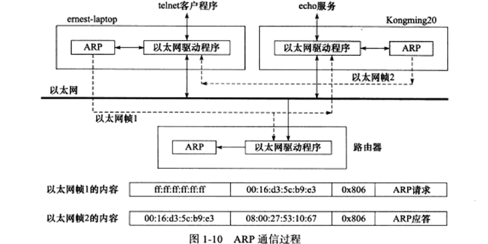
- 上图说明：
- 以太网帧参照图1.6
- ARP请求/应答是从以太网驱动中发出的，并不是独立于驱动程序之外
- 路由器也将收到ARP请求的以太网帧，只是它不会应答，也不会被tcpdump捕获（此处tcpdump指定了捕获的通信双方的ip）
DNS工作原理
- 通常使用机器的域名而非IP地址来访问，将域名转换为IP地址的方法称为
域名查询服务，包括：NIS(Network Information Service，网络信息服务)、DNS、本地静态文件等
DNS查询和应答报文详解
- DNS是一套分布式的域名服务系统，每个DNS服务器上都存放机器名到IP地址的映射并动态更新
- 使用DNS协议向DNS服务器查询，DNS查询/应答的报文格式如图1.11 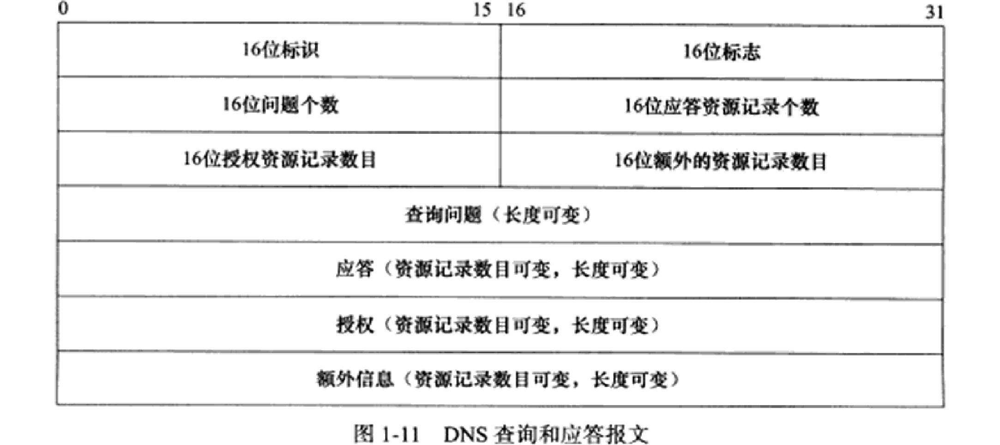
- DNS报文格式：
- 16位
标识(Identification)字段用于标记一对DNS查询/应答，以此区分某个应答是哪个查询的回应 - 16位
标志(Flags)字段用于协商具体的通信方式和反馈通信状态，如图1.12： 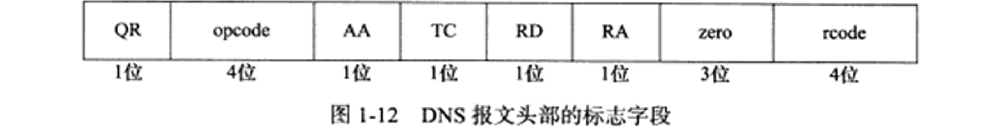- QR是查询/应答标志：0是查询，1是应答
- opcode定义查询/应答的类型：0是标准查询，1是反向查询（由IP地址得到域名），2是请求服务器状态
- AA是授权应答标志，仅由应答报文使用：1表示域名服务器是授权服务器
- TC是截断标志，仅当DNS报文使用UDP服务时使用（因为UDP数据报长度有限制）：1表示DNS报文超过512字节被截断
- RD是递归查询标志，当目标DNS服务器无法解析域名时：
- 0是迭代查询，即将它知道的其他DNS服务器的IP地址返回
- 1是递归查询，即它将向其他DNS服务器继续查询，直到获得结果并返回
- RA是允许递归标志，仅由应答报文使用：1表示DNS服务器支持递归查询
- zero这3位未使用，必须都设为0
- rcode是4位返回码，表示应答状态：0表示无错误，3表示域名不存在
- 接下来4个16位字段：
查询问题个数、应答资源记录个数、授权资源记录数目、额外资源记录数目，对应报文的最后4个字段。通常：- 查询报文一般有1个查询问题，而应答资源记录、授权资源记录、额外资源记录数目都是0
- 应答报文至少有1个应答资源记录，而授权资源记录、额外资源记录数目可为0或非0
- 可变长的
查询问题的格式如图1.13： 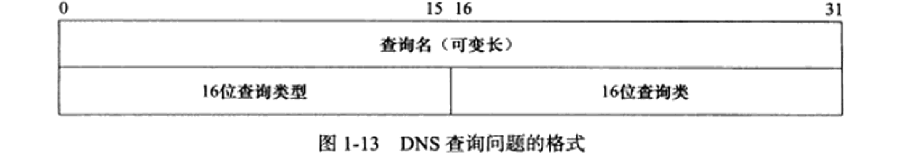- 查询名以一定格式封装了要查询的主机域名
- 16位查询类型表示如何查询：
- 类型A值为1，表示获得目标主机的IP地址
- 类型CNAME值为5，表示获得目标主机的别名
- 类型PTR值为12，表示反向查询
- 16位查询类通常为1，表示获得因特网地址（IP地址）
- 可变长的
应答字段、授权字段、额外信息字段都适用RR(Resource Record，资源记录)格式，如图1.14： 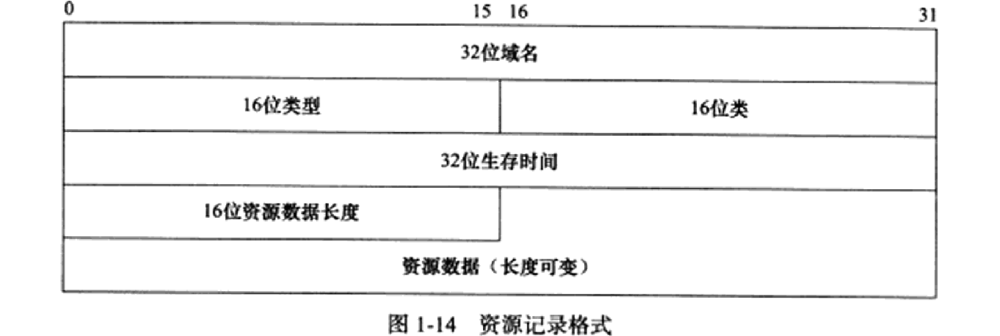- 32位域名是该记录中资源对应的名字，其格式与查询问题中的查询名相同
- 16位类型和16位类的含义与查询问题中的查询类型和查询类相同
- 32位生存时间表示该查询记录的结果可被本地客户端缓存多久（秒）
- 16位资源数据长度和资源数据的内容取决于16位类型字段，对类型A而言，资源长度位4字节，资源数据是32位IPv4地址
- 16位
- DNS协议的细节参考RFC（有诸多文档）：
- RFC1035介绍域名的实现和规范
- RFC1886描述DNS协议对IPv6的扩展支持
Linux下访问DNS服务
- 要访问DNS服务，必须知道DNS服务器的IP地址
- linux在
/etc/resolv.conf文件中存放DNS服务器的IP地址
|
|
- 文件/etc/resolv.conf是系统自动生成的，编辑后重启会被覆盖
- nameserver用于指定DNS服务器的IP地址，可以有多个nameserver，查询优先级从上往下
- options edns0是配置选项，开启RFC2671描述的DNS扩展
- 常用于访问DNS客户端的程序是
host，使用如下
|
|
- host命令使用DNS协议和DNS服务器通信：-t选项告诉DNS协议使用的查询类型，此处使用A类型，即通过域名查询IP地址
- 上面输出表明：主机名www.baidu.com是www.a.shifen.com的别名，其IP地址是182.61.200.6和182.61.200.7
使用tcpdump观察DNS通信过程
- 使用host命令查询百度的IP地址，并用tcpdump抓取以太网帧：
|
|
- 使用
IP地址:端口号来描述通信的某一端，使用>表示数据传输的方向 - 第一行输出是A机192.168.1.108向首选DNS服务器219.239.26.42（见上面/etc/resolv.conf）发送的查询报文
- 目标端口53是DNS服务器使用的端口
- 63637是本次DNS查询报文的标识值，用于标记一对DNS查询/应答
- +表示启用递归查询标志
- A?表示使用A类型查询方式，即查询IP地址
- www.baidu.com是查询名
- 第二行输出是DNS服务器向A机发送的DNS应答：
- 3/5/5表示该报文中有3个应答资源、5个授权资源、5个额外信息
- 其中，3个应答资源的内容为：
- CNAME www.a.shifen.com表示机器的别名
- A 182.61.200.6表示机器的IP地址
- A 182.61.200.7表示机器的IP地址
socket和TCP/IP协议族的关系
- 数据链路层、网络层、传输层都在内核中实现
- 实现TCP/IP协议栈的系统调用主要有两套：socket和XTI，后者基本不再使用
socket的API的主要功能：- 从用户缓冲区复制数据到TCP/UDP内核发送缓冲区，交给内核发送数据，或是从内核TCP/UDP内核接收缓冲区复制数据到用户缓冲区，从内核读取数据
- 应用程序可通过API来修改内核中各层协议的某些头部信息或其他数据结构，从而控制底层通信的行为
- socket是一套通用网络编程接口，不仅可访问TCP/IP协议栈，还可访问其他协议栈（如X.25协议栈、UNIX本地域协议栈）